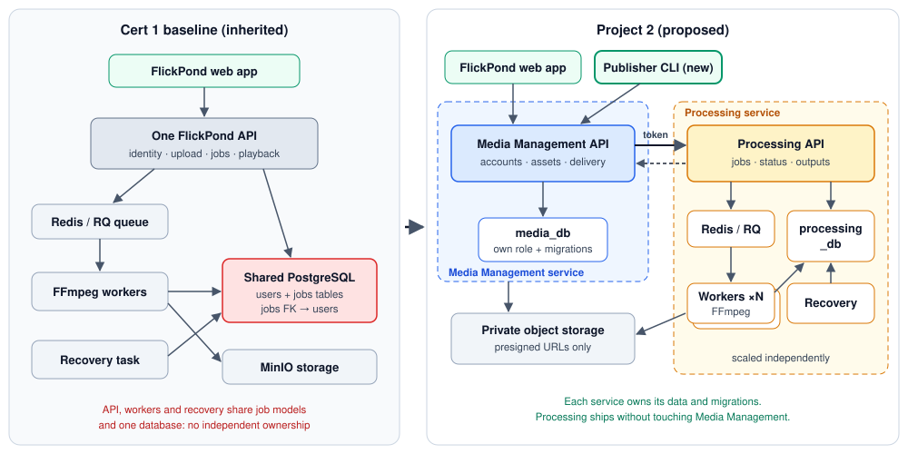

Retain the lecturer’s supplied feedback as F-01. The only open design comment asks for detailed DDD justification of the microservice choices.
Use local commit 885453726d629c524bf511d665311863d9bc70a5 as the implementation starting point. Upstream changes are not a prerequisite.
Keep the future repository transition separate. The user plans to remove the submodule arrangement and use the team’s own remote later.
Keep the business and scope register from step 02. Continue the member effort ledger alongside later work.
Produce
Approval and baseline decisions: records/project-decisions.txt. The original proposal remains unchanged.
Step 02 business statement, personas, use cases and contribution map are prepared in business-scope.html.
Recorded decision
Working-plan decision D-01 replaces the historical 890c5ec starting-point reference with local 8854537. No pull, upstream comparison, remote change or submodule migration is needed for this step. Detailed DDD remains an explicit future action, not completed evidence.
Status
The approval and baseline questions are resolved. Routine project records can continue without blocking the business and scope work.
Use owned training content as the demonstration setting: a course team’s clips and an independent trainer’s videos.
Use P-01 Maya and P-02 Arun as content owners and owner-viewers. Use P-03 Jules as the integrator and P-04 Sam as the operator.
Keep the authenticated uploader as the owner. Do not add shared team ownership, learner accounts or public sharing.
Use UC-1 through UC-7 and their acceptance stories to keep the workflow and operations in scope.
Reuse the prepared scope and contribution tables in report sections 1.1–1.4. Use the context diagram as input to later platform design.
Prepared outputs
Business statement, stakeholder register, four doodle personas, context diagram and a representative owner journey.
Seven use-case acceptance stories, explicit exclusions, inherited/new contribution map and business decisions BS-01–BS-07.
Stable persona and use-case IDs in business-scope.json. All fictional persona details are labelled.
Scope decision
Course teams and trainers are concrete examples of the approved small-content-team audience. Publishing means preparing owner-accessible outputs. The web app and Publisher CLI remain the two clients. The two-service design still needs the lecturer-requested DDD justification in step 03.
Status
Step 02 material is prepared for team review. There is no unresolved business-scope question blocking the next discussion. Steps 03–08 documentation is prepared; implementation is not started.
The domain model tests the two-service choice against a modular monolith and a four-service split. It documents models, rules, ownership and conditions that would invalidate the choice.
Glossary, workflow discovery and comparison of service-boundary alternatives.
Account / Asset and ProcessingJob / Attempt / Output models, with invariants and state transitions.
Context map, aggregate and lifecycle diagrams on an editable tldraw board.
A direct response to the lecturer’s DDD comment, with implementation and evidence checks still pending.
Design conclusion
Media Management owns identity, Assets and access. Processing owns attempts, outputs and recovery. The main reason is data and release ownership. Workers already scale separately in the baseline.
What remains
Design documentation is prepared for team review. Runtime results are not established. Steps 06–08 preparation is available; implementation and runtime checks remain ahead.
Before/after architecture and an upload-to-playback sequence.
AD-01 through AD-08, with alternatives, trade-offs, consequences and verification obligations.
Explicit process, service, data and infrastructure boundaries.
Compatibility and single-environment limitations, with exact AWS products left to step 07.
Design conclusion
Retain two services and separate database ownership. Keep the web and CLI on one public facade. Use durable intake and reconciliation without introducing a new event broker.
What remains
Design documentation is prepared for team review. Runtime results are not established. Steps 06–08 preparation is available; implementation and runtime checks remain ahead.
The contract pack gives implementers concrete public and private interfaces, persistence ownership and replay behavior. These are design specifications, not running endpoints.
Three OpenAPI documents: public facade, private Processing API and private source-access API.
Two-database logical schema, credential ownership, transactions, retention and compatibility rules.
Illustrative payloads and 25 planned contract cases, including duplicate requests and uncertain deletion.
Editable tldraw API/data diagrams, plus local SVG snapshots and diagram sources.
Design conclusion
Keep public job_id as an Asset ID. Processing uses a separate internal ID. Reserve attempts before enqueue. Cancel by Asset ID after uncertain submission. Use live state reads and separate storage credentials.
What remains
Design documentation is prepared for team review. Runtime results are not established. Steps 06–08 preparation is available; implementation and runtime checks remain ahead.
Recovery protocols, attempt fencing, trust controls and negative-test plans are documented. Timing defaults remain recommendations; all runtime checks are not run.
Accepted proposal commitments stay fixed. How to detect interrupted encoding (recommended); After an interrupted attempt (recommended); Recover boundary delivery (recommended). Recommended defaults await team confirmation. All runtime results are not run.
Build gate
Documentation prepared for team review. Implementation and measured acceptance remain pending.
The AWS container release plan compares hosting, storage and promotion choices. Exact account, capacity, credentials and budget remain cloud prerequisites.
Evidence protocols, report structure and the first local work order are prepared. Local build planning is ready; team approval and cloud execution prerequisites remain separate.
Accepted proposal commitments stay fixed. Presentation demo delivery (recommended). Recommended defaults await team confirmation. All runtime results are not run.
Build gate
Local implementation may start in a later authorised task using documented defaults. Cloud execution needs verified account, credentials, resources, TLS and budget. The website does not record team approval.
Begin with the smallest complete path across the new boundary. Reuse the existing video engine and browser.
LeadIbrahim · parallel tracks
Report sectionsUpdate 2.2 · 3 · 5
Depends onStep 08 approved by the team
Do this in order
Establish the reproducible frozen baseline and resolve the inherited image finding.
Extract Processing with its database, roles, migrations, private contract, workers and recovery.
Adapt Media Management with asset records, a Processing client, compatible routes and stored-source retry.
Complete the web upload-to-playback flow before optional polish.
Implement the Publisher CLI, boundary tests and deployment automation in parallel after contracts stabilise.
Update diagrams and ADRs when implementation changes a decision. Record actual work and hours as it occurs.
Produce
A working cross-service web flow, then the CLI’s folder-publish flow and retry.
Per-service deployment scripts, smoke tests and commit-linked implementation evidence.
Decision to settle
Proposal milestone: integrated web workflow by 14 October, CLI started. Security, AWS and experiments follow in the 15–20 October window. This sequence is a plan, not a claim that those milestones already passed.
Complete when
The integrated workflow runs with separate data ownership. The CLI uses only the published API. Required boundary checks pass.
Run the agreed experiments against a recorded release. Preserve failed results and limitations as well as successful runs.
LeadLong · Guruprasath
Report sections4.1–4.4 · 5 · 2.3
Depends onStep 09 and test environment ready
Do this in order
Run the 1/2/3-worker backlog experiment with fixed clips, explicit CPU caps and recorded system resources.
Run the 50-user status test and separate 20-user login test. Check playback in a real browser.
Run all three failure experiments, owner/security tests and the database isolation checks.
Release Processing independently. Time deployment and smoke test. Demonstrate rollback to the previous image.
Record CLI implementation effort and size. Check for service imports and database credentials.
Write result tables and plots from raw data. Link each conclusion to its run and limitation.
Produce
A release-specific evidence pack, results against every target, and updated report sections 4–5.
Proposal milestone: AWS deployment and experiments during 15–20 October. Preserve 21–25 October for fixes and rehearsal.
Decision to settle
A worker replica count is not throughput evidence. Historical 660 ms status reads do not prove the new boundary meets its target. Manual scaling is not autoscaling. An interrupted worker test does not prove host or zone failover.
Complete when
Every submitted claim has a result or an explicit gap. Raw results reproduce the charts and support the final narrative.
Use 31.5 minutes of speaking/demo and 8.5 minutes of questions across the six segments. Show average Project 2 effort and combined Project 1+2 effort, as the consolidated briefing requests.
Complete when
The team can finish within 40 minutes, explain each major decision, and trace each result to evidence.
Do not describe proposal diagrams as delivered architecture unless the implementation matches. Report any missed target plainly. Keep peer assessment separate from member-hour totals.
Complete when
The submission package is complete, the report includes presentation feedback, and the team retains submission receipts.
Kubernetes, autoscaling, multi-zone/multi-region failover, historical migration, malware scanning and full key rotation.
Operational measurements remain necessary. They are different from product analytics. An outbox is conditional under AD-04, only if reconciliation proves insufficient.
Resolve differences with the stated source priority
Difference
Working interpretation
Platform wording
Slide 5 says build a platform. Consolidated guidance says reuse is preferred. Follow the consolidated interpretation for the course, while retaining Team 17’s firm platform and CLI commitments.
Cloud provider
The course does not mandate AWS. The proposal does. The old baseline note that excludes an AWS move cannot override AD-07.
Experiment size
Historical guidance suggests one versus two workers. The proposal commits to one, two and three, with fixed clips and CPU caps.
Effort
Historical notes describe 28–48 active agent hours and a three-day sequence. The submitted estimate is 31 person-days. Do not equate agent runtime, elapsed days and member effort.
Team size
Slides specify four or five members. The proposal records approval for three on 22 September. The original approval email was not supplied in this folder.
Notes and dates
The notes still ask whether reuse/team arrangements are approved and reference missing paths. Use the proposal for team context, the original schedule for the slot and the original template for the report.
Code inspection establishes implemented logic. It does not establish fresh runtime success, live cloud state or current CI status.
The selected local baseline
Media_player starting point:885453726d629c524bf511d665311863d9bc70a5. The local working tree was clean when checked. The parent revision is dc5b84b.
The user chose this current local revision. No upstream comparison or update is required. The original proposal’s 890c5ec reference remains historical and does not block work.
The user plans to replace the submodule arrangement with the team’s own repository/remote later. That migration is not part of step 02. No pull, remote change or submodule metadata change occurred.
No profile, reset or email verification. Logout does not revoke the JWT. Cookie-only dependency: CLI bearer support is absent. C2 · Authentication dependency
Upload
Type checks, video-container sniffing, 100 MiB size limit, private source object, durable job and queue submission. C3 · Upload API
Storage write, database commit and enqueue are separate operations. No resumable upload or malware scan.
No AWS-specific provisioning, Publisher CLI or automated per-service deployment found in this checkout. Sonar and ZAP findings do not block releases. C14 · DAST workflow
Current versus proposed architecture
The proposal supplies a starting diagram. It is a design commitment, not proof of implemented service isolation.

Existing original asset: project-documentation/images/architecture-before-after.svg. Check the final report diagram against the implemented release.
The historical baseline report cites September cloud observations: 50-user completed-job reads at 660 ms p90, with no request failures. Login reached 5.8 seconds p90 at 50 users.
These tests mainly read one completed video. They do not demonstrate processing throughput or the new 20-concurrent-login target. The load report in the local Git object at 890c5ec:docs/load-test-cloud-20260929.md corroborates these figures. Its raw files are not in this checkout.
The earlier report also records a fixable HIGH image finding. Current workflows define gates, but this review did not run scans or inspect remote CI. Treat the finding as an inherited issue to recheck, not a verified current scan result.
A small number of checkpoints. Actions remain ordered by dependency rather than assigned an artificial daily deadline.
October to November 2026
Proposal and team registration
Course / proposal
Past date. The proposal records submission. Check the actual receipt and team registration in Canvas.
Lecturer proposal review
Course
Scheduled review date. The user now supplied the only feedback: the proposal is accepted, with detailed DDD justification required. The original feedback message date is unknown.
Design pack ready for implementation
Suggested internal target
Catch-up target proposed on 9 October. Complete steps 01–08. The proposal originally placed baseline/domain/contracts in 5–7 October.
Integrated boundary and first progress report
Proposal milestone
By the end of 8–14 October: separate Processing data, web workflow working, CLI started. Confirm the exact progress submission date in Canvas.
AWS delivery and experiments complete
Proposal milestone
The 15–20 October window includes security, deployment, pipeline, baseline run and final experiments.
Rehearsal and presentation pack ready
Suggested internal target
Use the proposal’s 21–25 October window for fixes, evidence and rehearsal. Avoid new optional features.
Team 17 presentation · 14:35–15:15
Scheduled course slot
40 minutes including questions. Singapore time (UTC+8). Original schedule page 2. Check Canvas for changes and Zoom details.
Written examination
Tentative course window
Tentative in the briefing. Check Canvas for the confirmed date. Protect preparation time while completing the report.
Final report reviewed by all members
Suggested internal target
Three days of margin before the stated deadline. Include presentation comments, actual results, effort and limitations.
Final report submission
Course deadline
Deadline in briefing page 6. Exact cutoff time and upload format are not established by these local files.
Progress reports: submit fortnightly to PM Progress Reports in Canvas. Include title, date, completed work, hours per member, problems and the next two weeks’ tasks.
For planning only, 14 October, 28 October and 11 November form a fortnightly cadence. These are proposed dates, not published Canvas deadlines. The proposal’s “second progress report” window does not cancel the course cadence.
Peer assessment: monitor NUS email and use unique ranks by the notified deadline. No exact date appears in the supplied materials. Presentation upload and report cutoff: check Canvas.
The submitted estimate is 31 person-days, approximately ten per member. A shorter implementation period does not remove the report, evidence or team review work.
Work package
Lead
Person-days
Baseline and scan repair
Guruprasath
2
Domain, contracts and OpenAPI
Long · team review
3
Processing extraction
Ibrahim
6
Media Management adaptation
Ibrahim
3
Boundary security
Guruprasath
3
Publisher CLI and contract tests
Long
2
AWS and delivery pipeline
Guruprasath
4
Experiments and raw results
Long
3
Integration fixes
All
2
Progress, presentation and report
All
3
Total
Team 17
31
Planning estimates from the proposal. Record actual hours separately. Do not report these estimates as completed effort.
All values below are initial proposal targets. This roadmap records no fresh pass results.
Acceptance targets
ID / experiment
Workload and initial target
Evidence to retain
E-01 · Scaling
30 identical 60-second 720p clips. 1, 2, 3 workers at 2 vCPU each. Two workers ≥1.6× and three ≥2.1× one-worker jobs/min. Median queue wait falls each step. Zero failed jobs.
Fixture hash, CPU caps, host capacity, FFmpeg settings, per-job timestamps, output verification, throughput, queue wait, processing time, failure count, CPU and memory.
Record commit, image digests, test-script version, fixture checksum, AWS region and host resources for every run.
Define queue wait as claim time minus queued time. Define processing time as completion time minus claim time. Define the throughput measurement window before testing.
Use the same clip contents and encoding settings at each worker count. Make source filenames/job identifiers distinct. Include audio when testing the inherited HLS path.
Leave enough capacity for all three 2-vCPU workers and supporting services. Prevent an exhausted shared host from invalidating the comparison.
Suggested protocol: use a warm-up, then three measured repetitions per worker count. Record every run and explain variability. Repetitions are a recommendation, not a proposal requirement.
Record errors and failed jobs. Do not silently remove them from the statistics. Preserve raw data before producing charts.
Define source URL refresh and recovery timing under backlog. Check that a healthy long encode does not expire its lease.
Keep result rows marked “not run” until the run exists. Record a missed target as a missed target.
ID · requirement · owner · target · revision · environment · command · timestamp · raw files · actual · pass/fail · limitation
Recommended working structure: project-work/evidence/<run-id>/, with a manifest, configuration, raw data, charts and a short interpretation. This is a proposed structure, not an existing evidence pack.
Keep credentials, session cookies and signed URLs out of submitted evidence. Preserve the measurements needed to reproduce conclusions.
Submission map
One design pack. Reuse it in both deliverables.
Architecture records, DDD models and test protocols support the report and presentation. The course does not specify each as a separate upload.
What you submit
Deliverable
Required contents / destination
Authority
Project proposal
The team records submission on 4 October. Retain the receipt and lecturer feedback. PM Project Proposals in Canvas.
B0 pp. 7–8 · P §4.2
Fortnightly progress
Completed tasks, each member’s hours, problems, next two weeks. PM Progress Reports in Canvas.
B0 p. 14
Presentation
Six content segments, working demo, measured qualities, actual milestones/effort and outstanding issues.
G pp. 1–2
Final report
Original template structure, actual outcomes and presentation feedback. Due 16 November.
R · B0 p. 6
Working system and code
Repository URL or archive, deployment/run instructions and a release reference.
B0 p. 5
Pipeline and test scripts
DevSecOps scripts, experiment scripts and evidence references. Package with the code/report as Canvas directs.
B0 p. 5
Peer assessment
Each member submits unique contribution ranks by the notified deadline.
Context, business problem, platform thinking and scope. 2 + 1 min.
Long
2 · Project Conduct · 2 min
Actual status, issues, milestones and effort per member. 1.5 + 0.5 min.
Long
3 · Logical Architecture · 9 min
Decisions, components, logical diagram, DDD, producers and consumers. 7 + 2 min.
Ibrahim
4 · Physical Architecture · 9 min
AWS/network/nodes, persistence and representative detailed design. 7 + 2 min.
Guruprasath
5 · DevOps / Lifecycle · 7 min
Source/artifact strategy, pipeline, procedures and findings. 6 + 1 min.
Guruprasath
6 · Demonstration · 10 min
Integrated workflow, scalability/performance evidence and pipeline or independent release. 8 + 2 min.
Ibrahim · Long
Timings are the original guideline’s suggestions. Presenter assignments are recommendations for the team to confirm. Total: 31.5 minutes speaking/demo + 8.5 minutes questions.
Show actual effort for each member. Calculate average Project 2 effort as total Project 2 member hours ÷ 3. Calculate combined average from each member’s own Project 1 + Project 2 hours, divided by 3.
Do not count whole former teams’ hours. Do not replace hours with agent elapsed time. Prepare evidence for the live demo and mark any recorded fallback clearly.
01 · Baseline revision and contribution boundary recorded.
02 · UC-1–UC-7, exclusions and feedback reconciled.
03 · DDD glossary, contexts and invariants reviewed.
04 · Logical diagrams and AD-01–AD-08 consistent.
05 · API contracts, database ownership and compatibility agreed.
06 · Recovery, signed-URL handling and security cases specified.
07 · AWS capacity, cost, release and rollback approach selected.
08 · Targets, raw-evidence format and report ownership defined.
These are recommended team review conditions. They are not additional course submissions. Keep unresolved nonblocking details in the decision log.
Source register
Original files remain the authority.
This roadmap is an additional navigation and planning aid. No original document was moved, renamed or replaced.
What this review could establish
Reviewed the full text and tables of the proposal and report template, all 14 supplied briefing PDF pages, and all 3 presentation PDF pages. The PDF pages and the proposal’s four diagrams were also visually inspected.
No briefing video was found in project-documentation/. No video or audio was reviewed. No Canvas page, current Zoom details, original lecturer email or remote CI run was accessed. The user supplied the proposal-review feedback in this chat. It is preserved in records/project-decisions.txt. The proposal is accepted, with detailed DDD justification still required.
The report-template-notes file contains a broad historical working interpretation. The reference README points to several missing filenames. Those references do not replace the original DOCX/PDF authorities.
Current code was inspected locally at submodule 8854537. The application, cloud environment, scans and project test suites were not run. The roadmap interface itself was checked separately.
Authority order
Team-specific scope and commitments: Team17-Proposal.docx.
Consolidated course requirements: briefing-requirements.txt, checked against the original briefing PDF.
Presentation content and scheduled slot: original presentation guidelines PDF.
Report structure: original report template DOCX.
Historical notes support context only. Code determines implemented behavior. Runtime evidence must come from dated executions.
Original PDF found in Downloads. This additional reference copy is byte-identical. Audience and earlier feature intent only. Team17-Proposal.docx controls Project 2 scope.
User-supplied approval, open DDD action, selected local baseline and future repository transition. Recorded 9 October 2026. Original feedback date unknown.